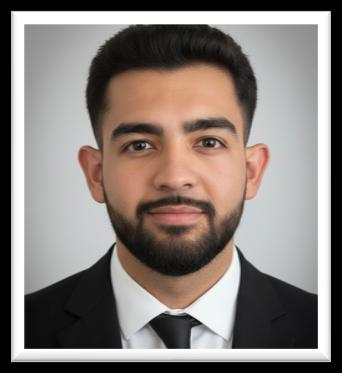

Computer Science Tutor
University of Cape Town — evidence of applied communication and mentoring, running weekly practicals and marking assessments.
// SIGNAL ACQUIRED — EBRAHIEM SLAMANG
Final-year Electrical & Computer Engineering student at the University of Cape Town, working across control systems, RF & electromagnetics, and machine learning for medical imaging.

UCT · ECE01 · About
I'm a final-year Electrical and Computer Engineering student at the University of Cape Town, currently focused on control systems, RF and electromagnetics, and applying machine learning to medical imaging. I matriculated second in my class with seven distinctions and an 86.1% aggregate, and I've carried that same discipline through into university — landing on the Dean's Merit List in both 2024 and 2025.
Outside the lab, I tutor first-year Computer Science students, tee off with the UCT Golf Club, and get outdoors with the Mountain & Ski Club. What draws me to engineering is the quiet usefulness of a well-built system: a controller that keeps a process stable, a signal that carries more information than noise, a model that helps a clinician see something they might otherwise miss.
02 · Journey
The path from matric science labs to university tutorials — every node a step in the same circuit.
2023 — Present
University of Cape Town
Fourth year of a four-year degree, specialising in control systems, RF & electromagnetics, and machine learning applications in medical imaging.
2024
University of Cape Town
Ran weekly practical sessions advising students on assignments and practicals, invigilated and marked tests, and answered student queries on the course discussion forum.
2018 — 2022
Cannons Creek Independent School
Mathematics, English HL, Afrikaans FAL, Physical Sciences, Geography, CAT and IT. Matriculated second in class with 7 distinctions and an 86.1% aggregate.
03 · Skills
The tools, focus areas and working habits I bring to a project — switched on.
04 · Artefacts
A few artefacts that back up the skills above. (Placeholder images below — swap in your own scans/photos.)
University of Cape Town — evidence of applied communication and mentoring, running weekly practicals and marking assessments.
Institute of IT Professionals. Certified for algorithmic problem solving under competition conditions.
Institute of IT Professionals. Silver (2021), Bronze (2022) — consistent placement across two consecutive years.
Cannons Creek Independent School. Early groundwork for the Student Representative, Student Leader and Prefect roles that followed.
05 · Achievements
06 · Involvement
07 · Connect
Open to internships, collaboration, and conversations about control systems, RF/EM or ML in medical imaging.